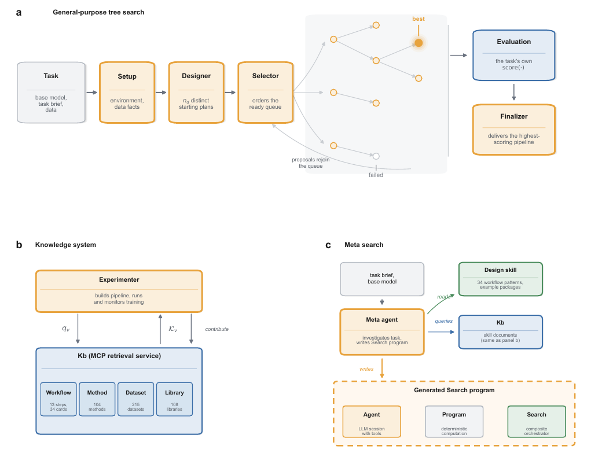

AIBuildAI PostTrain: Meta-Search Agent for Autonomous LLM Post-Training Tops PostTrainBench
TL;DR
- AIBuildAI LLM-Post-Train Agent (AIBuildAI Team, technical report in the GitHub repo; no arXiv ID) is an autonomous post-training system evaluated on PostTrainBench: given a base model, a target capability, and ten hours on one H100, produce a post-trained checkpoint scored on a held-out evaluation. Every agent role runs on Claude Opus 5.
- Its core is meta search: instead of running a fixed tree search over whole experiments, a meta agent investigates the task, consults a curated knowledge base (a 13-step post-training workflow skill, 104 method cards, 215 dataset cards, 108 library cards, served over MCP), and writes the search program the run will execute, composed from three primitives — Agent, Program, Search. Under "runtime replanning," each stage hands off to a fresh meta agent that reads measured outcomes and writes the next stage.
- Weighted-average score 46.6 vs. Locus 45.6 (Opus 5), Claude Code on Fable 5 41.8, Claude Code on Opus 5 35.0; official instruct models sit at 51.1. It leads agents on AIME 2025, BFCL, and HumanEval and is within two points on the other four tasks. Traced runs show almost all of the gain comes from the first SFT stage on teacher-written data.
Why this matters
PostTrainBench is the closest thing we have to a measured "AI post-trains AI" loop, and this tracker already holds the benchmark, the Locus submission that led it, and the 1,338-run analysis of strategy lock-in in autonomous post-training agents. This report is the first system that attacks lock-in structurally: it argues that a single long-context coding agent commits to one account of the task early and refines a stalled line rather than abandoning it, that parallel copies don't fix that because nothing makes their directions differ, and that fixed tree search can't express what post-training actually needs (corpus screening, prefix-cached staged pipelines, mid-run reward-model refits). The fix — let an agent design the search topology per task — is a harness-level idea, which is the recurring theme of this reading list.
The tweet calls it a "recursive self-improving (RSI) agent." The report itself is more careful, and so is this tutorial: the recursive part is thin (finished experiments can contribute observations back into the knowledge base; no evidence is given that this helps). What is real is a well-engineered meta-harness with hand-curated domain knowledge that edges out the leaderboard.
The core idea
Whole-experiment tree search (inherited from earlier AIBuildAI systems) treats each node \(v\) as a full pipeline scored by the task's own evaluator, \(m_v\); a designer proposes \(n_d\) distinct starting plans, a selector orders the ready queue, finished experiments return proposals that rejoin it, and a finalizer returns the best. The value of a run is
with \(\mathcal{T}\) the tree explored. Meta search replaces the fixed family of trees with a task-conditioned family of execution graphs:
where \(\mathcal{I}\) is the task information available to the meta agent (base model, task brief, data, its own probing of the evaluator) and \(\mathcal{F}\) includes DAGs, tournaments, fan-ins, and iterative loops. The topology that produced the nodes is now itself an output of an LLM.
Knowledge retrieval is embedding nearest-neighbor over full-text skill cards (reconstructed from the prose — the report gives no formula):
with \(q_v\) the experimenter's problem description at node \(v\), \(\phi\) the document embedding, and \(\mathcal{K}\) the corpus. As an example of what a method card carries, the DPO card states the objective verbatim:
plus a worked numerical example (\(\beta=0.1\), loss ≈ 0.653), the required data shape, extra models, and which trainer ships it.

Figure 1 from the report (extracted from the PDF): (a) whole-experiment tree search with setup, designer, selector, evaluation, and finalizer; (b) the knowledge system — an experimenter queries the Kb (workflow 13 steps / 34 cards, 104 methods, 215 datasets, 108 libraries) and may contribute observations back; (c) meta search — a meta agent reads the design skill (34 workflow patterns) and the Kb, then writes a search program composed of Agent, Program, and Search primitives.
How it works
Knowledge system. Four sub-corpora of structured records naming what works, under what conditions, with what outcomes — and what fails and why. The workflow skill is thirteen ordered research actions; step 1 is "understand what the scoring rewards — and price it": read the shipped evaluation code, write down metric, extraction rule, token cap and retry ladder, then run the evaluator once on the untouched base model for a measured floor and per-evaluation cost. Method cards (104; 30 with shipped implementations) carry the math, a worked example, knobs per library, and training signals to watch. Dataset cards (215) carry license, columns, a revision-pinned load line, and a screening record; 34 are flagged as evaluation benchmarks to hold out. Library cards (108) cover when to pick, how to start, and how to save a loadable result.
Meta search. A meta agent probes the task, reads the design skill's 34 patterns (general: sequential chain, router–specialists, DAG with joins, map–reduce, best-of-\(n\), tournament, committee voting, evaluator–optimizer; post-training-specific: SFT → GRPO, teacher distillation with iterative refinement, checkpoint tournament with weight averaging, runtime replanning), and writes a Python search program. Primitives: Agent (LLM session with tools, policies, typed output), Program (deterministic computation in a managed worker with resource limits), Search (composite orchestrator with spawn / run / wait). The patterns are "a vocabulary, not a whitelist."
Why not trees. Three post-training units don't fit a tree node: (1) a corpus, which only scores after a training run, so screening \(k\) data recipes costs \(k\) runs unless generation is its own stage with cheap checks (verifier pass rate, duplication); (2) a stage in an SFT → preference → rejection-FT curriculum, where a tree retrains shared prefixes from scratch but a program caches them; (3) a segment of an online-RL run where the policy starts exploiting a learned reward and the fix is refit-and-resume, not discard-and-restart.
META_SEARCH(task: base_model, brief, data, budget=10h on 1×H100):
meta ← Agent(Opus 5)
facts ← meta.investigate(task) # run shipped evaluator on base model: floor + eval cost
K ← Kb.retrieve(facts) # workflow/method/dataset/library cards
prog ← meta.write_search_program(facts, K, design_skill.patterns)
while budget remains:
result ← execute(prog) # Agents / Programs / nested Searches; spawn, run, wait
for each finished node v: m_v ← task.evaluator(artifacts_v) # scores hidden from the session
Kb.contribute(observations from result)
if prog.pattern == runtime_replanning:
meta' ← Agent(Opus 5) # fresh meta agent reads measured outcomes
prog ← meta'.write_next_stage(result, budget_remaining, K)
else: break
return argmax_v m_v checkpoint
A generated program (Appendix B, AIME 2025 on Qwen3-1.7B-Base). The meta agent found the base model scores 1/30, emits an answer line only 20% of the time, and that two format demonstrations raise that to 73% while moving accuracy by exactly zero — so format is not the bottleneck; the question is which reasoning-trace length a 1.7B model can be taught. It wrote a five-stage search: three corpora at different chain-of-thought lengths built on CPU while a "baseline insurance" agent prices one evaluation; three sequential pilot SFT runs with an incumbent replaced on improvement; a text-only strategy agent choosing corpus, starting checkpoint, and whether a second stage (length annealing, RFT, or DPO) is warranted; then the full run.
Results
Leaderboard (Table 1, four base models × seven tasks, weighted average). AIBuildAI 46.6; Locus 45.6 ± 0.8; Claude Code (Fable 5) 41.8 ± 1.7; Claude Code (Opus 5) 35.0 ± 1.4; official instruct models 51.1. Per task (mean over base models): AIME 2025 15.8 vs 13.3 (Fable 5) and 9.4 (Locus); BFCL 95.8 vs 94.3 (Locus), 1.5 (Claude Code on Opus 5) and 85.0 for the official instruct models; HumanEval 69.0 vs 66.6 (Locus), highest on every base model. Trailing: ArenaHard Writing 65.5 vs 66.3; HealthBench 42.6 vs 44.3; GPQA 31.4 vs 33.1; GSM8K 82.3 vs 83.5 (Fable 5).
Two traced runs (Section 4.3). HealthBench on Qwen3-4B-Base: 13.4 untouched → a corpus of 47,744 teacher-written responses → 1,300 SFT steps confirmed at 46.2 on the full set → 6,751 longer multi-turn teacher conversations, 650 more steps, six candidates screened on a 32-item subset against a pre-fixed gain threshold → 48.6. ArenaHard Writing on SmolLM3-3B-Base: 0.4 → 20,516-row teacher corpus, pilot then 2,600 full steps with a three-checkpoint weight average → 74.2 → one rejection-sampling round (5,805 rows: 2,246 teacher-ranked student responses, 76 teacher-written, 3,483 replayed) → 74.6, above Locus's 48.0 and the official instruct model's 49.2. In both, "almost the whole gain came from the first full training stage on teacher-written data."
Where the gap concentrates. ArenaHard trails Locus by 13.4 points on Qwen3-1.7B-Base and 16.3 on gemma-3-4b-pt; HealthBench by 10.2 on gemma-3-4b-pt; GSM8K 70.7 vs 76.9 on gemma. The system's few big losses are on the same small base model.
How it connects
- locus-automated-post-training — the entry this displaces by one point; Locus is a fixed harness on Opus 5, so this is as close to "same model, different harness" as the leaderboard offers.
- rsi-limit-1338-runs — the strategy-lock-in diagnosis for autonomous post-training agents. Meta search is a direct architectural answer (diverse starting plans, replanning on measured outcomes), but lock-in is not measured here.
- PostTrainBench (tracked) — the ten-hour, single-H100 budget means "post-training" here is SFT-scale distillation, not RL.
- disco-repo-to-skill / skill-library-google — the Kb is 400+ hand-built cards with worked examples, the expensive human-written version of what those works try to auto-compile.
- tgopd-teacher-gated-opd / reason-wide-not-deep — the traced runs are teacher distillation plus one round of teacher-ranked rejection sampling, which is why the first stage dominates.
- meta-harness / autodesign-meta-harness — outer-loop search over harness code; meta search applies the same move to the search procedure rather than the scaffold.
Critical take
- The lead is inside the noise. 46.6 vs. Locus's 45.6 ± 0.8 — and the AIBuildAI row reports no standard deviation. The authors call it "a snapshot of a system still under construction," which is the right register; the tweet's "outperformed Claude Code (Fable 5) by 11%" is relative to a different harness on a different model, and over half of the 33% figure over Claude Code (Opus 5) comes from that harness scoring 1.5 on BFCL (7.5% task weight).
- It's a distillation pipeline builder. Both traces show the score jump on the first SFT stage over teacher-written data from an unnamed open-weight teacher served on the same GPU; later stages add ~0.4–2.4 points. Whether meta search or the teacher choice earns the lead is not separated — an ablation running the fixed tree search with the same Kb and teacher is the missing experiment.
- "RSI" is aspirational. The only feedback loop into the system is "finished experiments may contribute observations back" to the Kb, with no measurement of whether later runs benefit. The knowledge is human-curated (every card claim carries a URL and fetch date; "nothing comes from the system's own runs").
- Variance is the admitted cost. The next-steps section concedes that an almost unrestricted topology space "raises the uncertainty of any single design and the variance between runs" and that two runs on similar tasks "should not arrive at unrelated topologies." That is the lock-in problem's mirror image, and the proposed fix — storing search structure in the Kb — turns meta search back into pattern selection.
- The benchmark rewards contract-learning. BFCL is gated by output format; the system beats the official instruct models there (95.8 vs 85.0) while trailing them everywhere else. The workflow skill's step 1 — read the evaluator's code first — is good engineering and also exactly how you overfit a benchmark's grader.
If you remember three things
- Meta search: an Opus 5 meta agent probes the task and writes the search program (Agent / Program / Search primitives, 34 patterns, runtime replanning), instead of running a fixed tree search that can't express corpus screening, prefix-cached stages, or reward-model refits.
- It edges the PostTrainBench leaderboard at 46.6 vs 45.6 (Locus) with leads on AIME, BFCL, and HumanEval, but the margin is within reported noise and the gains come overwhelmingly from first-stage SFT on teacher-written data.
- The capability lives in a hand-curated 400+ card knowledge base served over MCP; the "self-improving" loop is a write-back channel with no measured effect, so read this as a strong meta-harness, not RSI.